Variation of the dust extinction curve
A 3D perspective from Gaia
Gregory M. Green, Max Planck Institute for Astronomy, Heidelberg
STScI Spring Symposium, 12 May 2025

What is dust?
Why do we care?
Dust is crucial for understanding...
Star formation
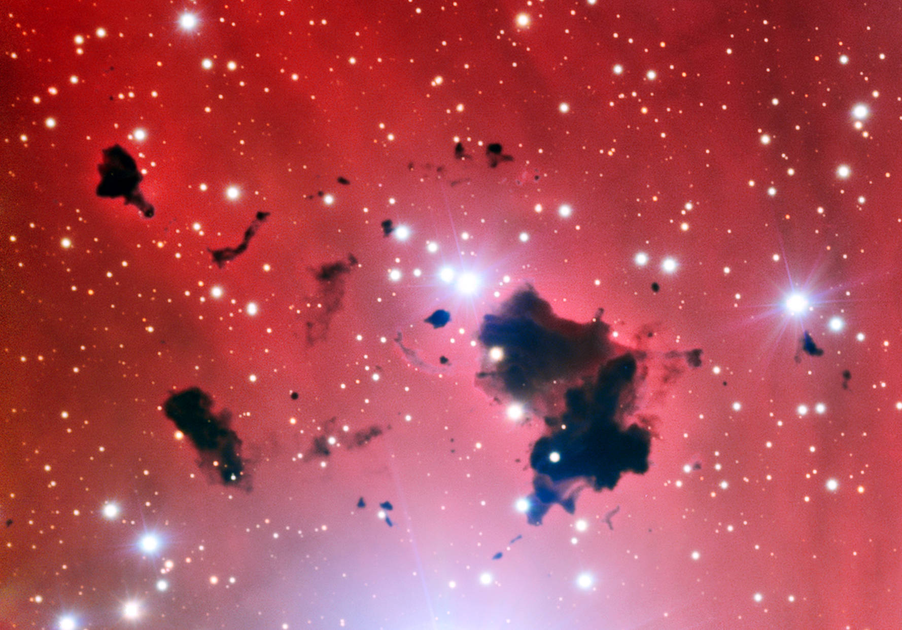

Stellar population synthesis
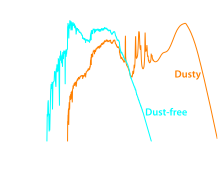
Chemistry of the ISM
Mapping dust in 3D with stars


The dust “extinction curve”


The extinction curve and grain-size distribution
Dust R(V)
Data


Train model with 2.4 million stars ...
 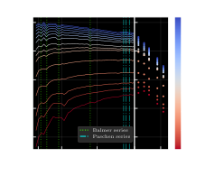
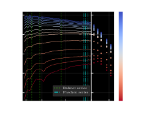

Learned stellar models of Gaia XP spectra
 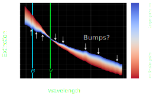
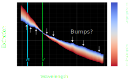
Remove stars with bad $\chi^2/\mathrm{dof}$, low extinction, ...
~130 million R(V) measurements with XP (Zhang & Green 2025)


 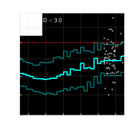
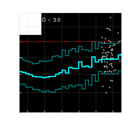


R(V) in the Galactic plane
R(V) in the Magellanic Clouds

For the first time, we can “see” the dust properties throughout much of the Milky Way in 3D.
Surprising results:
- U-shaped relation between density & R(V).
- Star-formation / UV radiation correlated with high R(V).
Is there information in the extinction curve beyond R(V)?
Green, Zhang, & Zhang (arXiv:2410.22537)


“Empirical” extinction curves
Extinction-curve shapes

Decomposition: $ \displaystyle r_{ \hspace{-0.7em} \underset{\scriptstyle\color{cyan}\text{star}}{\underset{\color{cyan}\uparrow}{i}} } \hspace{-0.6em} \left(\lambda\right) = \sum_{ \hspace{-2.0em} \underset{\scriptstyle\color{cyan}\text{component}}{\underset{\color{cyan}\uparrow}{k}} \hspace{-2.0em} =1 }^{16} \hspace{-1.0em} \overset{\color{cyan}\text{coefficients}}{\overset{\color{cyan}\bigg\downarrow}{ b_{ik} }} \hspace{-0.7em} \overset{\color{cyan}\text{basis}}{\overset{\color{cyan}\downarrow}{ g_k\!\left(\lambda\right) }} $ .
 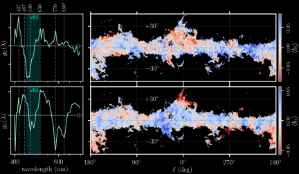
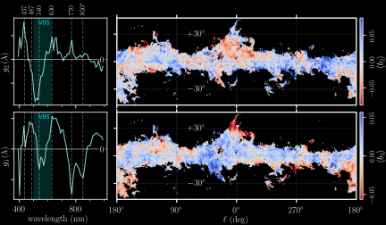
 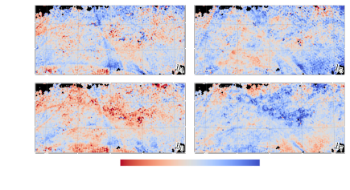
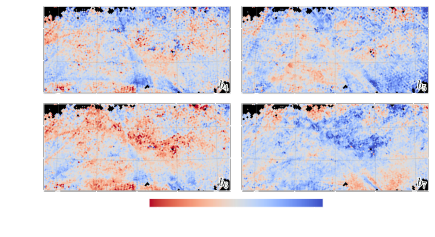

A new broad feature at ~850 nm
Confirmation of broad feature at ~770 nm
Maps of 770 & 850 nm features

All of these feature are of unknown origin.
...but they appear to correlate with diffuse interstellar bands (DIBs).

New frontier in dust mapping: R(V) and beyond.
130 million Gaia XP spectra reveal abundant extinction curve variation.
We don't know what causes it.
Questions?
Extra slides
Gaia XP forward model


Dust beyond R(V)